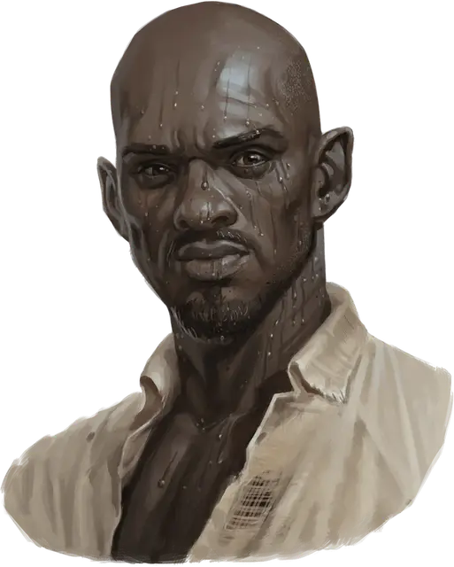

Эмиль Торанеску
Emil Toranescu
Средний Гуманоид (Человек, Перевертыш), хаотично-злой, именной НИП

Класс Доспеха 11 (11 в облике гуманоида, 12 природный доспех в облике волка или в гибридном облике)
Хиты 72 (9к8 + 32)
Скорость 30 футов (40 футов в облике волка)
| мод | спас | ||
|---|---|---|---|
| СИЛ | 15 | +2 | +2 |
| ЛОВ | 13 | +1 | +1 |
| ТЕЛ | 14 | +2 | +2 |
| мод | спас | ||
|---|---|---|---|
| ИНТ | 10 | +0 | +0 |
| МДР | 11 | +0 | +0 |
| ХАР | 10 | +0 | +0 |
Навыки Восприятие +4, Скрытность +3
Иммунитет к урону дробящий, колющий, рубящий от немагических атак, кроме нанесённых посеребрённым оружием
Чувства пассивное Восприятие 14
Языки Общий (не может говорить в облике волка)
Опасность 3 (700 опыта)
Бонус мастерства +2
Особенности
Перевертыш. Эмиль может действием превратиться в волка, гибрид волка и гуманоида, или же принять свой истинный облик гуманоида. Все его статистики кроме КД остаются одинаковыми во всех обликах. Все несомое и носимое им снаряжение не превращается. Он принимает свой истинный облик, если умирает.
Острый слух и тонкий нюх. Эмиль совершает с преимуществом проверки Мудрости (Восприятие), полагающиеся на слух и обоняние.
Действия
Мультиатака (только в облике гуманоида или гибрида). Эмиль совершает две атаки: две копьём (в облике гуманоида) или одну укусом и одну когтями (в гибридном облике).
Укус (только в облике волка или гибрида). Рукопашная атака оружием: +4 к попаданию, досягаемость 5 футов, одна цель. Попадание: Колющий урон 6 (1к8 + 2). Если цель — гуманоид, она должна преуспеть в спасброске Телосложения Сл 12, иначе станет проклятой ликантропией вервольфа.
Когти (только в гибридном облике). Рукопашная атака оружием: +4 к попаданию, досягаемость 5 футов, одно существо. Попадание: Рубящий урон 7 (2к4 + 2).
Копье (только в облике гуманоида). Рукопашная или дальнобойная атака оружием: +4 к попаданию, досягаемость 5 футов или дистанция 20/60 футов, одно существо. Попадание: Колющий урон 5 (1к6 + 2), или колющий урон 6 (1к8 + 2), если используется двумя руками для совершения рукопашной атаки.
Описание
Сильный парень стискивает прутья решетки своей камеры, стараясь не стучать зубами. Его одежда разорвана, и он мокрый с головы до ног.
Его зовут Эмил Торанеску, и он вервольф [werewolf]. Он уверяет, что он житель Валлаки, за которым до самого замка гнались голодные волки. Он просит персонажей освободить его, взамен предлагая помощь.
Вервольф — это дикий хищник. В гуманоидном облике у такого оборотня обостренные чувства, вспыльчивый характер, а также страсть к сырому мясу. Если в зверином облике оборотень выступает в роли хищника, то в гибридном он выглядит очень пугающе — развитое мускулистое тело, покрытое шерстью, увенчано головой волка. Вервольф может использовать оружие в гибридном облике, однако предпочитает разрывать противников на части при помощи когтей и клыков.
Большинство вервольфов начинает сторониться цивилизованных земель практически сразу же после превращения. Те, кто борются с проклятьем, опасаются за своих родных и близких, так как не уверены в своем контроле. Те, кто приняли проклятье, боятся своих действий и жажды убийств. В дикой среде вервольфы образуют стаи, в которых можно встретить обычных и лютых волков.
См. дополнительно статью: "Бестиарий: Ликантропы"